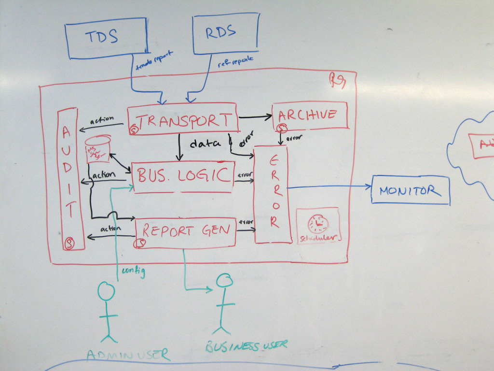
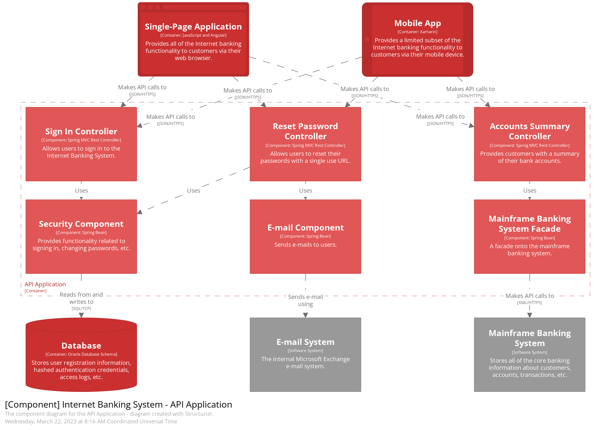
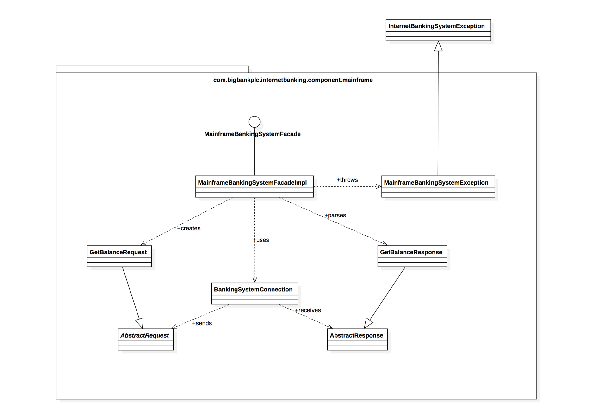

<!-- .slide: data-background="#151522" --> ## Modelo C4 <br /> Contexto, Contenedores, Componentes y Código <br /> <br /> <div class="logo"> <img src="assets/me.png" class="image-logo rounded"/> </div> <em> Robert Stevens Pineda - @ScolDev <!-- .element class="footer" --> </em> <div> </div> <em>https://linktr.ee/scoldev</em> --- ### Agenda 1. Historia<!-- .element class="fragment" --> 2. Propósito<!-- .element class="fragment" --> 3. Mapas del Código<!-- .element class="fragment" --> 4. Modelo C4<!-- .element class="fragment" --> 5. Notación<!-- .element class="fragment" --> 6. Conclusiones<!-- .element class="fragment" --> --- ### 1. Historia<!-- .element class="fragment" --> <br /><!-- .element class="fragment" --> - Simon Brown entre 2006 y 2011<!-- .element class="fragment" --> - Construido sobre las raíces de UML y el modelo de vista de arquitectura 4+1<!-- .element class="fragment" --> - Se populariza con el lanzamiento del sitio web oficial (c4model.com) y un artículo publicado en 2018<!-- .element class="fragment" --> --- ### 2. Propósito<!-- .element class="fragment" --> <br /><!-- .element class="fragment" --> - Agilismo<!-- .element class="fragment" --> - Simplicidad<!-- .element class="fragment" --> - Ofrecer diferentes puntos de vista mediante una descomposición detallada de los bloques que componen la arquitectura.<!-- .element class="fragment" --> --- Líneas y formas sin sentido<!-- .element class="fragment" --> <div class="r-stack"> <img class="fragment" src="assets/c4/c4_1.jpg" width="450" height="300">  <img class="fragment" src="assets/c4/c4_3.jpg" width="400" height="400"> <img class="fragment" src="assets/c4/c4_4.jpg" width="400" height="400"> </div> --- Líneas y formas sin sentido<!-- .element class="fragment" --> <br /><!-- .element class="fragment" --> - Ambigüedad<!-- .element class="fragment" --> - Confusión<!-- .element class="fragment" --> - Carencia de sentido<!-- .element class="fragment" --> - Notaciones inconsistentes<!-- .element class="fragment" --> --- ### 3. Mapas del Código --- <div class="image-full-size"> </div> <em>Los diferentes niveles de zoom permiten incluir facilmente a una audiencia variada que quiera indagar sobre los diferentes aspectos del sistema.</em> --- <div class="image-full-size"> </div> <em>Contexto adicional en una vista general</em> --- <div class="image-full-size"> <img src="assets/c4/map_2.png" /> </div> <em>Navegar en terrenos poco familiares</em> --- <div class="image-full-size r-stack"> </div> <em>Vista de bajo nivel</em> --- ### 4. Modelo C4 --- <div class="row"> <blockquote> "The software architecture of a system is the set of structures needed to reason about the system, which comprise software elements, relations among them, and properties of both." <br /> <br /> Software Architecture In Practice </blockquote> </div> --- Abstracciones<!-- .element class="fragment" --> Para crear nuestros mapas de código necesitaremos un conjunto de abstracciones que permitan crear un lenguaje ubicuo que nos permita describir la estructura estática del sistema.<!-- .element class="fragment" --> --- <div class="image-full-size"> </div> --- <div class="image-full-size"> <img src="assets/c4/map_4_4.png" /> </div> <em>Nivel 1: Diagrama de Contexto de Sistema</em> --- <div class="image-full-size"> </div> <em>Nivel 2: Diagrama de Contenedores</em> --- <div class="image-full-size">  </div> <em>Nivel 3: Diagrama de Componentes</em> --- <div class="image-full-size r-stack">  </div> <em>Nivel 4: Diagrama de Código</em> --- <div class="image-full-size r-stack"> <img src="assets/c4/c4-overview.png" /> </div> <em>Modelo C4 - Vista General</em> --- ## Otros diagramas --- - Panorama (System Landscape)<!-- .element class="fragment" --> - Diagrama del sistema en el contexto de una empresa.<!-- .element class="fragment" --> - Dinámico<!-- .element class="fragment" --> - Diagrama del flujo de comunicación entre los elementos.<!-- .element class="fragment" --> - Despliegue<!-- .element class="fragment" --> - Cómo los contenedores están relacionados con la ifnraestructura física.<!-- .element class="fragment" --> --- ### 5. Notación<br /><!-- .element class="fragment" --> El modelo C4 es independiente de la notación y no prescribe ninguna notación en particular.<br /><br /><!-- .element class="fragment" --> Sin embargo, hace uso de una notación simple que funciona muy bien en pizarras, notas adhesivas, papel, fichas y una gran variedad de herramientas de diagramación.<!-- .element class="fragment" --> --- <div class="image-full-size"> </div> <div class="image-full-size"> </div> <em>Notación Simple</em> --- - Persona: Representa uno de los usuarios humanos del sistema de software (ej. actores, roles, personas, etc)<br /><!-- .element class="fragment" --> - Sistema de Software: El nivel de abstracción más alto y describe aquello que entrega valor al usuario, tanto propios como externos.<br /><!-- .element class="fragment" --> --- - Contenedor: Representa una aplicación o almacenamiento de datos. Debe estar en ejecución para que el sistema completo funcione. (ej. aplicación web server-side, aplicación web client-side, aplicación móvil, función serverless, base de datos, etc)<br /><!-- .element class="fragment" --> - Componente: Agrupación de funcionalidad relacionada y encapsulada detrás de una interfaz bien definida.<br /><!-- .element class="fragment" --> --- - Código: Representaciones de bajo nivel que evidencien los detalles de implementación de un componente particular del sistema. --- https://c4model.com --- https://www.drawio.com --- ### 6. Conlusiones<!-- .element class="fragment" --> - Complemento a otras notaciones y diagramaciones<!-- .element class="fragment" --> - Promueve el agilismo<!-- .element class="fragment" --> - No es una bala de plata<!-- .element class="fragment" --> --- ¿Preguntas? --- ¡Gracias!